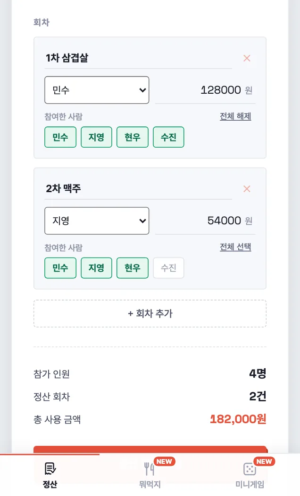

상황별 모임 정산 방법
모임 비용은 "총액 ÷ 인원"으로 끝나지 않을 때가 많습니다. 술을 안 마신 사람, 오늘의 주인공인 생일자, 따로 움직인 사람이 있으면 어떻게 나눠야 할지 헷갈립니다. 자주 만나는 상황을 딱정산에 어떻게 입력하면 되는지, 실제로 누가 누구에게 얼마를 보내게 되는지 예시로 정리했습니다.
핵심은 하나입니다. 참여한 사람이 다른 비용은 회차를 나눠 적는다. 영수증이 한 장이어도 괜찮습니다. 회차마다 그 회차에 참여한 사람끼리만 나누고, 송금은 모든 회차를 합쳐 가장 적은 횟수로 정리됩니다.
회식에서 술 안 마신 사람이 있을 때
네 명이 삼겹살집에서 식사 80,000원, 술 36,000원이 나왔고 민수가 한 번에 결제했습니다. 수진은 술을 마시지 않았습니다. 영수증은 한 장이지만 정산에서는 두 회차로 나눠 적습니다.
- 1차 식사 — 결제 민수, 80,000원, 참여 민수 · 지영 · 현우 · 수진 → 1인 20,000원
- 1차 술 — 결제 민수, 36,000원, 참여 민수 · 지영 · 현우 (수진 해제) → 1인 12,000원

부담할 돈은 민수 · 지영 · 현우 32,000원, 수진 20,000원입니다. 민수는 116,000원을 냈으니 84,000원을 돌려받습니다.
| 보내는 사람 | 받는 사람 | 보낼 금액 |
|---|---|---|
| 지영 | 민수 | 32,000원 |
| 현우 | 민수 | 32,000원 |
| 수진 | 민수 | 20,000원 |
안 마신 사람이 여럿이어도 같은 방법입니다. 술 회차에서 마신 사람만 고르면 됩니다.
생일자 몫은 빼고 나눌 때
다섯 명이 저녁을 먹고 100,000원이 나왔는데, 생일인 지영의 몫은 나머지 네 명이 나눠 내기로 했습니다. 결제는 민수가 했습니다. 지영도 참가자 명단에는 넣되, 이 회차의 참여자에서만 빼면 됩니다.
- 생일 저녁 — 결제 민수, 100,000원, 참여 민수 · 현우 · 수진 · 태호 (지영 해제) → 1인 25,000원
| 보내는 사람 | 받는 사람 | 보낼 금액 |
|---|---|---|
| 현우 | 민수 | 25,000원 |
| 수진 | 민수 | 25,000원 |
| 태호 | 민수 | 25,000원 |
지영은 낼 돈도 받을 돈도 없습니다. 2차는 지영도 같이 낸다면, 2차 회차에서는 지영을 참여자로 두면 됩니다.
여행 · MT 경비를 나눌 때
여행은 숙소, 장보기, 교통비를 서로 다른 사람이 결제하는 일이 많습니다. 결제마다 회차를 하나씩 만들고, 결제한 사람과 그 비용을 함께 쓴 사람을 고릅니다. 네 명이 1박 2일 MT를 갔고, 수진은 따로 이동해 택시를 타지 않았습니다.
| 회차 | 결제 | 금액 | 참여 |
|---|---|---|---|
| 숙소 | 민수 | 240,000원 | 민수 · 지영 · 현우 · 수진 |
| 장보기 | 지영 | 84,000원 | 민수 · 지영 · 현우 · 수진 |
| 택시 | 현우 | 18,000원 | 민수 · 지영 · 현우 |
부담할 돈은 민수 · 지영 · 현우 87,000원, 수진 81,000원입니다. 결제가 세 군데로 나뉘었지만 송금은 세 번이면 끝나고, 모두 가장 많이 낸 민수에게 보내면 됩니다.
| 보내는 사람 | 받는 사람 | 보낼 금액 |
|---|---|---|
| 수진 | 민수 | 81,000원 |
| 현우 | 민수 | 69,000원 |
| 지영 | 민수 | 3,000원 |
카드와 현금을 섞어 냈을 때
네 명이 120,000원을 먹었는데 계산할 때 현우가 현금 30,000원을 먼저 내고, 나머지 90,000원은 민수가 카드로 긁었습니다. 한 번의 계산이지만 낸 사람이 둘이므로 회차를 두 개로 적습니다. 참여자는 둘 다 네 명 모두입니다.
- 저녁 (카드) — 결제 민수, 90,000원, 네 명 모두
- 저녁 (현금) — 결제 현우, 30,000원, 네 명 모두
| 보내는 사람 | 받는 사람 | 보낼 금액 |
|---|---|---|
| 지영 | 민수 | 30,000원 |
| 수진 | 민수 | 30,000원 |
현우는 이미 자기 몫 30,000원을 현금으로 냈기 때문에 더 보낼 돈이 없습니다.
각자 시킨 메뉴가 다를 때
같이 먹은 안주는 똑같이 나누고 각자 시킨 식사는 본인이 내고 싶다면, 회차의 "금액 따로 입력"에 사람별 금액을 적습니다. 총액에서 그 합을 뺀 나머지만 1/n 됩니다. 계산 예시는 더치페이·N빵 정산 계산 방식의 "사람마다 메뉴가 다를 때"에 있습니다.
입력할 때 기억할 것
- 참여한 사람이 다르면 회차를 나눈다 — 영수증 한 장이라도.
- 결제한 사람이 다르면 회차를 나눈다 — 한 번의 계산이라도.
- 명단에는 모두 넣고, 회차마다 참여자만 고른다 — 빠진 사람은 그 회차 몫이 0원.
- 결과는 "결과 복사하기"로 단톡방에 붙여 넣거나 이미지로 저장해 공유한다.